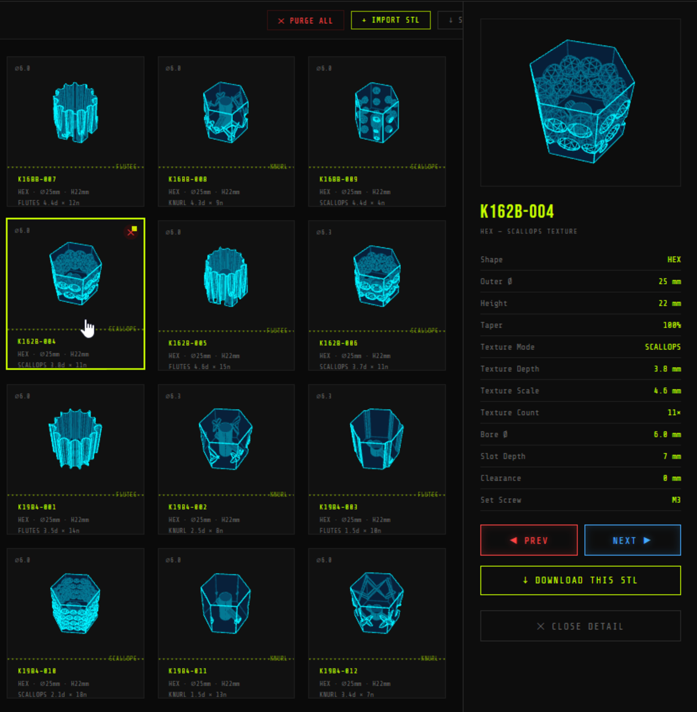

Commercial synthesizer interfaces present significant accessibility barriers for musicians with motor and sensory impairments. Standard controls, which are typically small, smooth, and closely spaced, require a high-precision pinch grip and considerable physical force to actuate.
This lived encounter inspired **ACCESS KNOB**, an open-source browser-based parametric customizer. Built on Universal Music Design (UMD) principles, the project shifts the paradigm from mass-produced controls to personalized, user-fabricated interfaces that enhance musical expression and independent control.
Traditional CAD tools present steep learning curves and lack accessibility. ACCESS KNOB utilizes a client-side WebAssembly-compiled **Manifold** geometry kernel to perform boolean operations in milliseconds, enabling real-time parameter tweaking directly in the browser.
Two Mounting Modes & Three Spindle Bores:
- Swap-In Mode: Replaces the original manufacturer knob entirely. Generates custom internal flat/splined bores to slide flush onto the bare metal/plastic spindle.
- Slide-Over Mode: An adaptive sleeve that slides snugly over the original control cap, preserving the instrument's resale value and avoiding complex hardware disassembly.
- Spindle Bore Profiles: Generates custom flats/splines for D-Shafts, Knurled/Splined (18/24-tooth gears), and Solid Round spindles (secured via integrated M3 set-screw).
To democratize fabrication for makerspaces without access to 3D printers, ACCESS KNOB includes a 2D vector SVG stacking exporter. This tool enables subtractive manufacturing (laser-cutting or CNC routing) using sheet materials (wood, acrylic, bamboo, or composites).
System Assembly Mechanics:
- Kerf Compensation: Sub-millimeter adjustment (default 0.1 mm) ensures slots and outer boundaries match target shapes after laser-cutting.
- Dual Alignment Rods: Generates two rods of width
thicknessand lengthheightKnob + kerf. Slits are cut through all stacked layers, allowing the rods to slide through, aligning the pieces perfectly for gluing. - Layer Taper: Outer contours are calculated iteratively at height intervals to preserve the overall tapered ergonomic profile.

Material choice impacts physical sensation, thermal stability, and control responsiveness during musical play:
| Material | Process | Rigidity | Friction | Tactile Feedback & Damping |
|---|---|---|---|---|
| PLA | FDM 3D Print | High | Medium | Crisp edges; low vibrational damping |
| PETG | FDM 3D Print | Medium | Medium | Slight elasticity (ideal for outer sleeves) |
| TPU | FDM 3D Print | Very Low | High | Flexible; excellent non-slip inner lining |
| Bamboo | Laser-Cut Stack | High | High (Grain) | Organic feel; superior mechanical damping |
To evaluate how parametric adjustments reduce required physical force, we model the peripheral finger force F required to rotate a potentiometer with torque resistance T:
Increasing the outer diameter D from a standard 10 mm to an accessible 32 mm or 40 mm reduces the required finger pinch force by 68.8% to 75.0%, compensating directly for reduced grip strength.
| Diameter (D) | Required Force (F) | Force Reduction |
|---|---|---|
| 10 mm (Standard) | F10 = 2T / 10 | 0.0% (Baseline) |
| 15 mm | 0.67 · F10 | 33.3% |
| 25 mm (Medium) | 0.40 · F10 | 60.0% |
| 32 mm (Large) | 0.31 · F10 | 68.8% |
| 40 mm (Accessible) | 0.25 · F10 | 75.0% |
Additionally, increasing height H expands the usable vertical contact area A = π · D · H, allowing palm-dragging or side-of-hand shear techniques that eliminate the need for a precise pinch grip.
Hands-Free Design Customization:
The web customizer features high-contrast glowing visual focus states, supporting commodity webcam head-tracking and facial gesture interfaces (Google Project Gameface, Apple Voice/Switch Control).
Future Work & Clinical Evaluation:
We are expanding the customizer to generate fader caps and drum pads. We will conduct an IRB-approved clinical evaluation with N = 12 musicians with hand impairments to assess long-term ergonomic efficacy, task speeds, and subjective creative agency.
